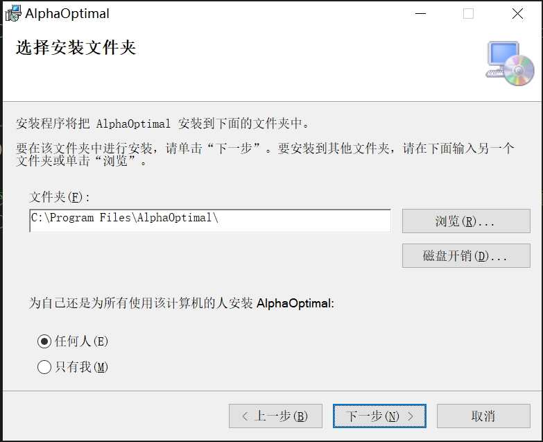
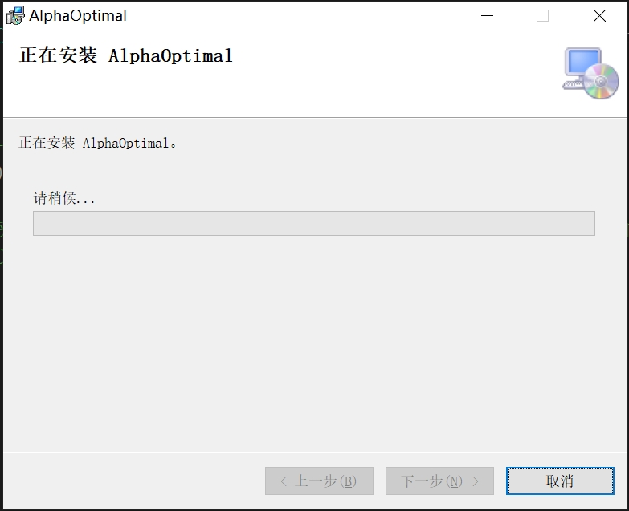
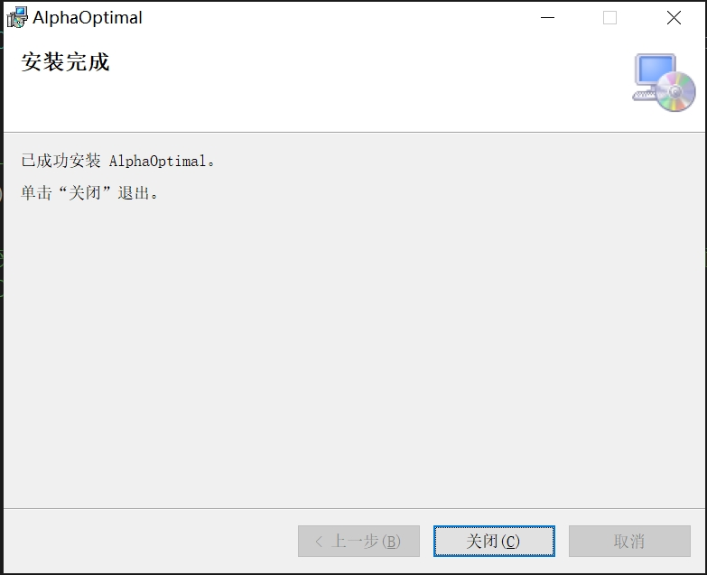

Alpha Optimal 安装说明
1. 安装包说明
- 安装包包含两个文件：
- AlphaOptimalSetup.msi
- setup.exe
说明：安装过程中，setup.exe提供必要的辅助资料，这两份文件必须放在同一目录下。
2. 安装步骤
- 第一步

- 第二步
 - 第三步

- 第四步
 - 第五步

3. 注册 PC
注册说明：首次安装时需要注册。注册完成后，保留授权文件 AlphaOptimalLic.txt，对已注册的 PC 是永久有效的。
- 启动软件
启动 AlphaOptimal 后可能出现错误提示：

- 定位安装目录
默认安装路径：C:\Program Files\AlphaOptimal（如已自定义请打开对应目录） - 生成用户标识
在安装目录下找到文件夹 UserIdGenerator（默认路径：C:\Program Files\AlphaOptimal\UserIdGenerator），双击运行UserIdGenerator.exe，将自动生成文件 userId.txt - 发送验证文件
将生成的 userId.txt 文件发送给授权方 - 获取授权文件
授权方根据 userId.txt 生成授权文件 AlphaOptimalLic.txt - 保存并应用授权文件
收到 AlphaOptimalLic.txt 后，请保存于本地，然后重新启动 AlphaOptimal- 再次出现错误提示：
- 点击“是”，选择授权文件 AlphaOptimalLic.txt

- 再次出现错误提示：
- 完成注册
注册成功，软件即可正常使用
4. 配置文件移植
-
1. 从之前版本移植的方法
- 导出: 菜单:关于->一键打包。软件会把相关的资料全部复制到指定路径下
- 导入: 手动把导出路径下的文件一一拷贝到软件安装路径下对应的路径
- data.ini toollib.json这两个文件直接拷贝到安装路径下
- 夹具相关拷贝到：automaticFixtures文件夹
- 机床配置相关拷贝到:machineSample文件夹
- 后处理器相关拷贝到:UserPostProcessor文件夹
-
2. 从当前版本移植的方法
- 导出: 菜单:关于->一键打包。软件会把相关的资料全部复制到指定路径下
- 导入: 菜单:关于->导入反馈。软件会把指定路径下的文件全部复制到安装路径
5. 常见错误及解决方案
-
提示找不到 *.dll 文件
解决方案：系统缺少组件，请安装VC_redist.x64.exe
说明：此文件可直接从微软官网下载，或向授权方索取。 -
软件闪退（带加密狗）
解决方案：检查加密狗尾部指示灯是否常亮；若不常亮，则需要安装加密狗驱动。